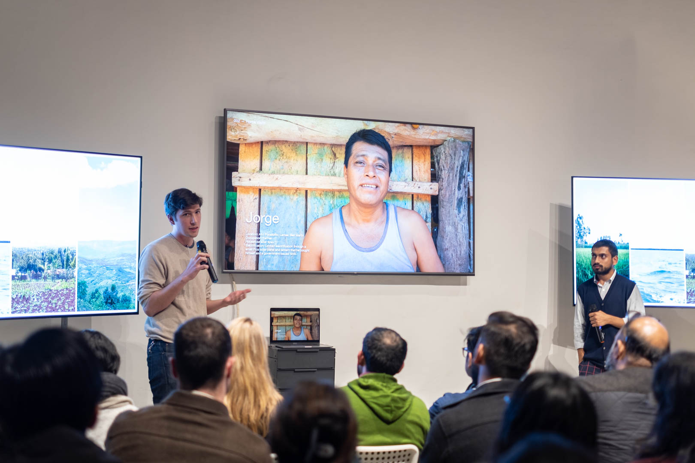
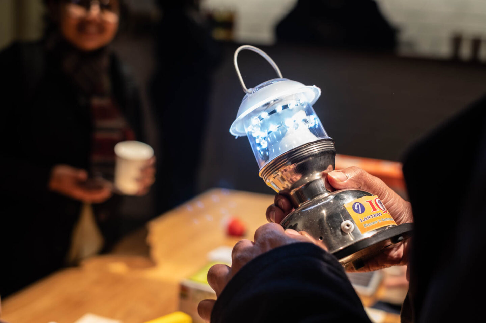

FOr this project I had the chance to visit Peru with the help of our local contact Marlene Vega, an anthropologist based in Lima. The research took place in and around Tarapotto near the jungle. We visited a breadth of homes from rural communities to homeowners who had lived in the city all their life. Thanks to Marlene we had ample time to introduce ourselves and the project to the village elders and outline our involvement: that we were not there to offer any solutions but rather to document current uses of energy and life at home.
This was a valuable and necessary step to build rapport and familiarize myself with the context while avoiding possible misconceptions during interviews. We also used a consent form, and made sure we had the consent of participants for anything we filmed or photographed. We had decided in advance how to thank the participants for their time: in India we gave sweets, in Peru and Kenya money, and Indonesia umbrellas — in each location this was decided with the local fixer.
Were those steps enough? Although we took the necessary measures to check the boxes of research ethics 101, like informed consent when it comes to sharing images online (we tried our best to convey they'd be shared on social media and offer the option of refusing), was it a fair trade or deal?
Lack of energy access is only a symptom of broader institutional shortcomings and I got the chance to document and speak of it in the hope that the energy access community be "invigorated" and inspired to innovate further. This begs the question of how we can rethink the role of design consultants when faced with such glaring power inequalities over the course of short evaluative projects.
Please reach out if you've had similar experiences or found solutions to better navigate these situations (from very small acts like printing some of the photos of respondents so they can have them at home, to challenging the premise of projects of this nature, or allocating project funds to support local infrastructural efforts).

